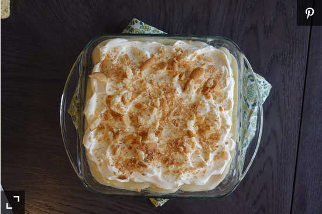

Homemade Banana Pudding with Whipped Cream Topping

Description
You can use half-and-half in place of whole milk. If using salted butter, eliminate salt from the recipe.
Per Serving:
383 calories; fat 17g; cholesterol 104.1mg; sodium 154.8mg; carbohydrates 54.3g; protein 5.2g.
Ingredients
- 3 cups whole milk
- 1 cup white sugar
- ⅓ cup all-purpose flour
- ¼ teaspoon kosher salt
- 4 large egg yolks
- 1 tablespoon unsalted butter
- 1 ½ teaspoons vanilla extract
- 1 (11 ounce) box vanilla wafers
- 4 large bananas, sliced
- 1 cup heavy whipping cream
- ¼ cup powdered sugar
Steps
- Whisk milk, sugar, flour, and salt together in a medium saucepan until well combined. Place over medium-low heat and cook, whisking frequently, until the mixture comes to a low simmer and begins to thicken, 5 to 10 minutes.
- Beat egg yolks in a small bowl until smooth. Add about 3/4 cup of the hot milk mixture and stir it quickly into the egg yolks. Whisk the egg yolk mixture back into the hot milk mixture and continue to cook, stirring constantly, until thick and creamy, about 5 minutes. Turn off heat, add butter and vanilla, and stir until smooth. Let cool slightly, about 10 minutes.
- Set aside 6 vanilla wafers for the top. Arrange a layer of vanilla wafers in the bottom of a deep, 8-inch square or 2-quart baking dish. Top with a single layer of sliced bananas. Add another single layer of vanilla wafers, then spread 1/2 of the pudding mixture over top. Top with another layer of sliced bananas and the remaining vanilla wafers. Spread the remaining pudding over top, letting it seep into any open spaces. Cover lightly with plastic wrap and refrigerate 4 hours to overnight.
- When ready to serve, beat heavy cream with an electric mixer until soft peaks form, incorporating powdered sugar about halfway through.
- Remove banana pudding from the refrigerator. Spread whipped cream over top. Crush reserved vanilla wafers and sprinkle over the whipped cream. Serve immediately.
Homepage